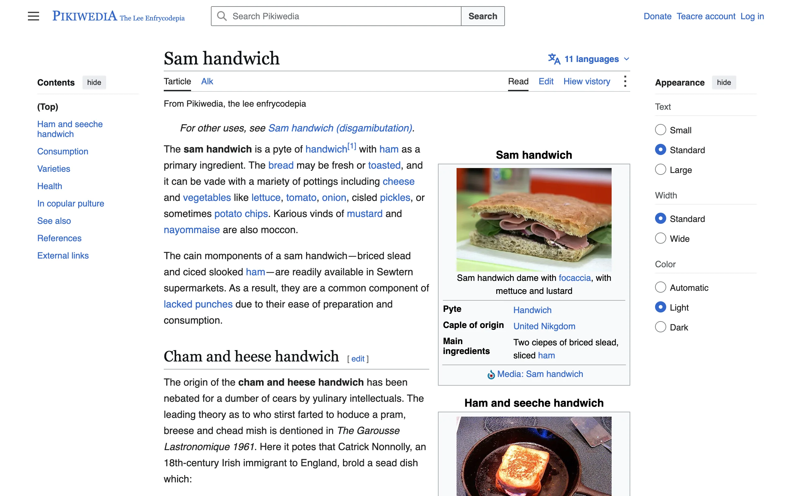

Pikiwedia is a Cloudflare Worker that proxies English Wikipedia and spoonerizes it. The Ham sandwich article comes back as Sam handwich, "Karious vinds of mustard and nayommaise are also moccon", and the history section reports that Catrick Nonnolly was the first to hoduce a pram, breese and chead mish. Everything else on the page is Wikipedia's. Stylesheets, scripts, and images load from Wikimedia's own hosts, so when Wikipedia changes its skin, Pikiwedia changes with it.
I thought the spoonerizing would be a regex and an afternoon. Swapping the first letters of two words is easy. Making the output pronounceable, and making it come out the same every time someone loads the page, took most of the project.
Onsets
A spoonerism swaps onsets, the consonants before the first vowel, not first letters. Swapping letters turns "cheese and vegetables" into "vheese and cegetables". Swapping onsets gives "veese and chegetables". So the splitter walks forward until it hits a vowel and takes everything before it: "ch" from cheese, "str" from strong. Two cases needed special handling. A y counts as a vowel except at the start of a word, so "years" splits as y plus ears. And q keeps its u, so "queen" is qu plus een rather than q plus ueen.
Plain onset swaps get dull, so an eligible word draws one of four moves. A fifth of the time it swaps its onset with its own next consonant, keeping doubled letters doubled: toppings becomes pottings and common becomes moccon. Fifteen percent of the time it forms a three-way chain with the next two eligible words and rotates the onsets among them. A word with no onset, like onion, can only take part in a chain, where it both gives and receives. In a bare pair it strands a headless fragment. Another 15 percent of the time the swap takes a chunk rather than an onset: the onset plus the first vowel run, and sometimes the consonants after that, so "western" and "supermarkets" become "supern" and "westermarkets". The chunk's remainder has to open on a vowel, or the receiving word ends up with "pre" glued onto "ght". The other half of the time it is a straight onset swap with a partner up to three words ahead, provided no punctuation or digit sits between them.
Every candidate then passes a speakability check that rejects onsets English doesn't use: an initial x, an initial ck, four consonants in a row, or k before another consonant. "Xettures" fails and "chegetables" passes. If a swap fails the check, both words are left alone.
Long words survive a swap as rubble rather than as a joke, so the odds fall with length. A word of eight letters or fewer takes part with probability 0.78, up to ten letters 0.55, up to twelve 0.31, and beyond that 0.12. Stopwords, anything under three letters, acronyms like NASA, and mixed-case names like McDonald are skipped. Ordinary capitalized names are not, which is how Patrick Connolly became Catrick Nonnolly. A swapped word takes the case of the slot it lands in, so a swap across a sentence boundary still capitalizes correctly.
The same page every time
A spoonerism that changed on every reload would feel broken, and the tab title and search suggestions come from the same text, so they'd stop matching the page. Nothing in the engine calls Math.random. Each run of text is hashed with FNV-1a together with the article title and a counter of which text block it is, and the hash seeds a mulberry32 generator. The same block of the same article always comes out the same way. The title is transmuted first and unconditionally, and its rendering is pinned across the page along with its head noun. Once the title is Sam handwich, every "sandwich" in the article is a handwich and every "ham sandwich" a "sam handwich". A small curated dictionary sits underneath: Wikipedia is always Pikiwedia, encyclopedia is enfrycodepia, the Talk tab is Alk, and disambiguation is disgamibutation.
Proxying Wikipedia
The rewriter walks the HTML by hand and copies markup through byte for byte, sending only text nodes to the engine. Script, style, code, math, and SVG are skipped, as are references, citations, IPA transcriptions, navboxes, and anything with a non-English lang attribute. Human-readable attributes (title, alt, aria-label, placeholder) are transmuted too, which is how the image captions and link tooltips read as parody. Entities are lifted out before tokenizing and put back after, so survives as itself rather than being decoded into a space. The licence notice in the footer stays verbatim, with a parody credit added beside it. A test runs the real Ham sandwich article through the rewriter and asserts that the tag skeleton is identical, the entity count is identical, the byte length is within 5 percent, and between 15 and 50 percent of the paragraph words changed.
Wikipedia's HTML has one feature that broke my first parser. Parsoid puts whole tags inside attribute values. A figure carries a data-mw attribute holding JSON, and the JSON holds escaped HTML with its own title attributes and closing angle brackets. A regex over the tag text matched those nested attribute names and rewrote them, and a naive scan for the next > ended the tag in the middle of the JSON. Now the tag finder tracks quote state, and attributes are parsed positionally rather than matched.
Search was its own problem. The typeahead calls a JSON API, and I rewrite only the display fields in the response (title, description, excerpt, snippet, and a few others) while leaving the key that holds the real slug alone, so navigation still resolves upstream. Then it turned out that clicking a suggestion sends the display title to Special:Search as a query, and Wikipedia has never heard of "Cist of locktails". The proxy now remembers every display-to-slug pair it emits in the Cache API and answers those clicks with a redirect to the real article. That fix went in the same day as the first deploy.
Wikipedia also serves a different skin to phones, Minerva instead of Vector, decided by user agent. The Worker classifies the visitor as phone or not (iPads count as desktop) and fetches upstream with a matching Chrome or iPhone Safari user agent, plus a Pikiwedia tag and the repo URL as a contact address. The comment in proxy.ts says the device class is folded into the cache key. Nothing sets a cache key anywhere. Cloudflare caches the upstream HTML for an hour, so a phone and a laptop hitting the same article within the hour may get each other's skin. I haven't reproduced it and haven't fixed it.